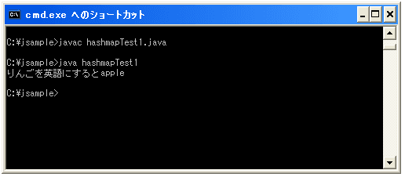

要素の格納と取り出し
広告
では実際に要素を格納してから取り出してみます。
要素を格納するにはHashMapクラスで用意されている"put"メソッドを使います。
put public V put(K key, V value)
指定された値と指定されたキーをこのマップに関連付けます。マップが以前にこのキーのマッピング
を保持していた場合、古い値が置き換えられます。
パラメータ:
key - 指定される値が関連付けられるキー
value - 指定されるキーに関連付けられる値
戻り値:
指定されたキーに関連した値。または、キーのマッピングがなかった場合はnull。戻り値 null
は、HashMap が以前に null と指定されたキーを関連付けていたことを示す場合もある
要素と、それに対応するキーを合わせてマップに登録します。既にキーが登録されていた場合は、そのキーに対応する要素をこのメソッドで指定した要素に置き換えます。
HashMap<String,String> map = new HashMap<String,String>();
map.put("りんご", "apple");
map.put("ぶどう", "grapes");
今度は要素を取り出します。要素を取り出すにはキーを指定し、そのキーに対応した要素を取り出すことになります。HashMapクラスで用意されている"get"メソッドを使います。
get public V get(Object key)
この識別情報ハッシュマップで指定されたキーにマップされている値を返します。マップがこのキー
のマッピングを保持していない場合は null を返します。戻り値の null は、マップがキーのマッピ
ングを保持していないことを示すとはかぎりません。つまり、マップが明示的にキーを null にマッ
プすることもあります。containsKey メソッドを使うと、こうした 2 つの場合を見分けることがで
きます。
パラメータ:
key - 関連付けられた値が返されるキー
戻り値:
マップが、指定されたキーにマッピングしている値。このキーに対するマッピングがマップにない
場合は null
例えば下記のような感じです。
HashMap<String,String> map = new HashMap<String,String>();
map.put("りんご", "apple");
map.put("ぶどう", "grapes");
System.out.println(map.get("りんご"));
また要素を取得する前に、要素を指定するためのキーがマップに登録されているかどうかを先に確認する事も出来ます。HashMapクラスで用意されている"containsKey"メソッドを使います。
containsKey public boolean containsKey(Object key)
マップが指定されたキーのマッピングを保持する場合に true を返します。 パラメータ: key - マップにあるかどうかが判定されるキー 戻り値: マップが指定されたキーのマッピングを保持する場合は true
例えば下記のような感じです。
HashMap<String,String> map = new HashMap<String,String>();
map.put("りんご", "apple");
map.put("ぶどう", "grapes");
if (map.containsKey("りんご")){
System.out.println(map.get("りんご"));
}else{
System.out.println("指定したキーは存在しません");
}
サンプルプログラム
では実際に試してみましょう。
import java.util.HashMap;
class hashmapTest1{
public static void main(String args[]){
HashMap<String,String> map = new HashMap<String,String>();
map.put("りんご", "apple");
map.put("ぶどう", "grapes");
if (map.containsKey("りんご")){
System.out.print("りんごを英語にすると");
System.out.println(map.get("りんご"));
}else{
System.out.println("指定したキーは存在しません");
}
}
}
上記をコンパイルして実際に実行してみると下記のようになります。

( Written by Tatsuo Ikura )
Profile

著者 / TATSUO IKURA
初心者～中級者の方を対象としたプログラミング方法や開発環境の構築の解説を行うサイトの運営を行っています。